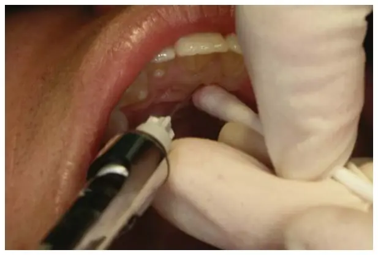
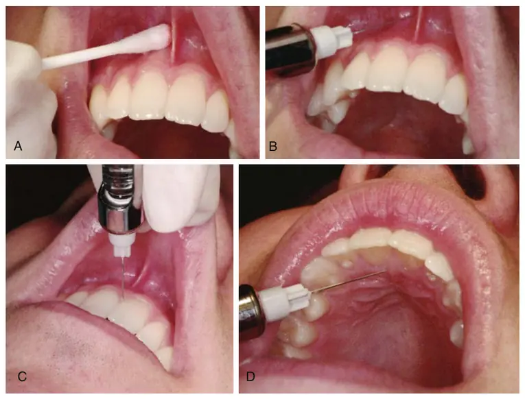

نسخه استخراجشده؛ ترجمه یا تأیید علمی انجام نشده است. وضعیت: captured
برای جراحی پریو در سمت پالاتال کانین تا کانین بالا، بیمار تعریف میکند که دفعهی قبل سوزن را «درست وسط برجستگی پشت دندانهای جلو» فرو کردهاند و از درد از جا پریده است. کجای کار اشتباه بود؟

عصبهای نازوپالاتین دو طرف با هم از سوراخ اینسیزیو بیرون میآیند؛ در خط وسط، حدود ۱ سانتیمتر پشت سانترالها و زیر پاپیلای اینسیزیو. این بلاک با حداکثر یکچهارم کارپول، کام قدامی هر دو طرف را از مزیال پرمولر اول راست تا مزیال پرمولر اول چپ بیحس میکند.
بافت این ناحیه متراکم، چسبیده به استخوان و بسیار حساس است. برای همین نازوپالاتین بالقوه دردناکترین تزریق داخل دهان است و پروتکل کمدرد اینجا از همهجا مهمتر است.
روش دیگر سه بار ورود سوزن دارد ولی اگر درست انجام شود، تقریباً بیدرد است. در تزریق دوم و سوم بافت از قبل بیحس شده و بیحسی سطحی و فشار سواب لازم نیست.

عیبهای این روش: سه تزریق، بدنهی سرنگ در دید بیمار، و حساسیت پاپیلای بین سانترالها تا چند روز. در این روش خط وسط لب بالا هم بیحس میشود.
در هر دو روش، مقاومت زیاد هنگام تزریق طبیعی است و گاهی کمی محلول از محل سوزن بیرون میزند؛ اهمیت بالینی ندارد.
شکستها و احتیاط: اگر محلول فقط یک طرف کانال اینسیزیو برود، بیحسی یکطرفه میشود؛ در بافت بیحسشده دوباره وارد شو و سمت بیحسنشده را تزریق کن. سوزن را بیش از ۵ میلیمتر در کانال اینسیزیو جلو نبر؛ ورود به کف بینی خطر عفونت دارد.